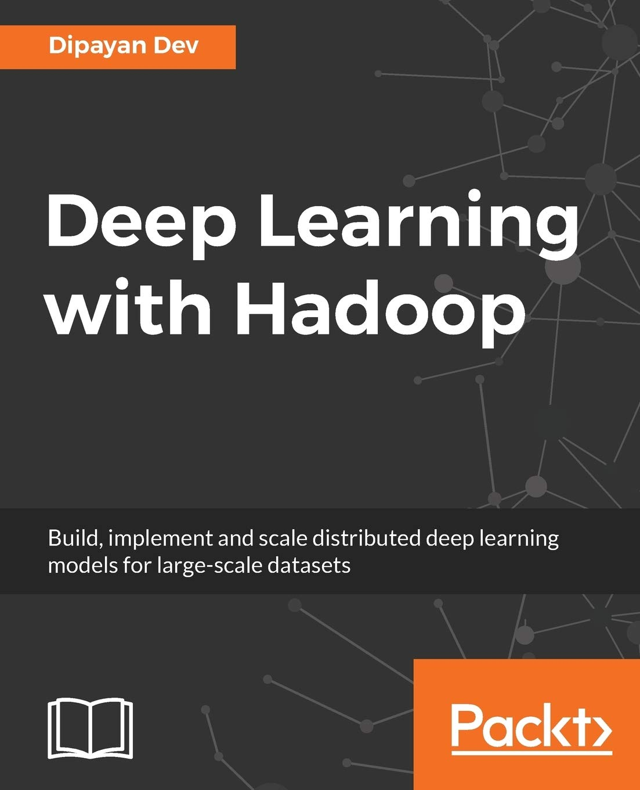

Highly accomplished and versatile professional with a unique blend of expertise in both Distributed Systems and Artificial Intelligence. With two times Master of Technology (M.Tech) degrees in Distributed Systems and Artificial Intelligence, I am passionate about bridging the realms of these cutting-edge fields. My goal is to drive innovation at the intersection of distributed systems and AI, revolutionizing industries and shaping the future of technology.
About Me
Books and Publications

My book Deep Learning with Hadoop is published worldwide and available in top online stores.
I have authored ~10 research papers with ~100 global citations in Distributed Systems and Computing. You can find my work on Google Scholar.
Certifications
I hold multiple Cloud Certifications in Azure and Google Cloud, and I am a Google Certified Professional Data Engineer.
Education
-
IISc Bangalore

- M.Tech (Artificial Intelligence)
- 2022-2024
-
Coursework Details:
- Linear Algebra
- Random Processes
- Linear and Non-Linear Optimization
- Machine Learning
- Data Engineering at Scale
- Quantum Computing
- Reinforcement Learning
-
NIT Silchar
- M.Tech (Distributed Systems)
- 2013-2015
- Department Topper [CGPA - 9.19/10]
Paper Publications
- Dr.Hadoop: an infinite scalable metadata management for Hadoop—How the baby elephant becomes immortal! (SCI-E indexed)
Name of Authors: Dipayan Dev and Ripon Patgiri
Name of Journal: Frontiers of Information Technology & Electronic Engineering
January 2016, Volume 17, Issue 1, pp 15-31
ISSN Number: 2095-9184 (print); 2095-9230 (online)
DOI: 10.1631/FITEE.1500015
Revision accepted: June 11, 2015 - HAR+: Archive and Metadata Distribution! Why Not Both?
Name of Authors: Dipayan Dev and Ripon Patgiri
Name of the Conference: 2015 International Conference on Computer Communication and Informatics (ICCCI 2015)
ISBN Number: 978-81-322-2537-9
Date of Publication: 8-10 Jan. 2015 - Performance Evaluation of HDFS in Big Data Management.
Name of Authors: Dipayan Dev and Ripon Patgiri
Name of the Conference: The International Conference on High Performance Computing and Applications (ICHPCA-2014), India
ISBN Number: 978-1-4799-5957-0
DOI: 10.1109/ICHPCA.2014.7045330
Date of Publication: 22-24 Dec. 2014 - Design and Implementation of Interactive Speech Recognizing English Dictionary.
Name of Authors: Dipayan Dev and Pradipta Banerjee
Book Title: Proceedings of 3rd International Conference on Advanced Computing, Networking, and Informatics
Name of the Conference: 3rd International Conference on Advanced Computing, Networking, and Informatics
ISBN Number: 978-81-322-2537-9
Date of Conference: 25 June, 2015 - A Survey of Different Technologies and Recent Challenges of Big Data.
Name of Authors: Dipayan Dev and Ripon Patgiri
Book Title: Proceedings of 3rd International Conference on Advanced Computing, Networking, and Informatics
Name of the Conference: 3rd International Conference on Advanced Computing, Networking, and Informatics
ISBN Number: 978-81-322-2537-9
Date of Conference: 25 June, 2015 - Book Chapter: ‘A Deep Dive into the Hadoop World to Explore Its Various Performances.
Name of Authors: Dipayan Dev and Ripon Patgiri
Book Title: Techniques and Environments for Big Data Analysis
ISBN Number: 978-3-319-27518-5
Publication Date: 06 February 2016 - Effective Countermeasures for Cache Timing Attack on AES.
Name of Authors: Dipayan Dev and Ripon Patgiri
Name of Journal: International Journal of Modern Communication Technologies & Research
ISSN Number: 2321-0850
Date of Publication: Volume-1, Issue-7, September 2013
Contact
Connect with me on LinkedIn for more information.
Last updated on: